pacman::p_load(sf, raster, spatstat, tmap, tidyverse)H3: Spatial Point Patterns Analysis
Hands-On Exercise 3
Notes for grading: For week 3, the requirement is to complete both chapters 4 and 5 in the R for Geospatial Data Science and Analytics course website. Both have been combined into a single webpage for brevity.
H3.1 Overview
Spatial Point Pattern Analysis serves to evaluate the pattern or distribution of a set of points on a map surface. These points serve many purposes, ranging from mapping events like crimes and disease onset (like John Snow’s map of the 1854 Broad Street cholera outbreak), or the locations of business services or facilities.
Using appropriate functions, this hands-on exercise aims to discover the spatial point patterns of a quintessential facility in 2020s Singapore - childcare centres. Specifically, we want to find out:
- if these are randomly distributed throughout the country, and;
- the planning areas with the highest concentration of childcare centres.
H3.2 The data
The datasets to be used are:
MP14_SUBZONE_WEB_PL, containing polygon features.CoastalOutline, a new dataset containing polygon features showing the boundaries of Singapore. It is provided by SLA in ESRI shapefile format.
In addition, our childcare centre data will, as always, be sourced from the Singapore government’s data lake at data.gov.sg. These will take the form of point feature data.
H3.3 Installing and Loading R packages
Along with the usual sf and tmap, three new packages will be used. They are:
spatstat, which includes a wide range of useful functions for first and second order spatial point patterns analysis, and to derive the kernel density estimation (KDE) layer.rasterreads, writes, manipulates, analyses and models (i.e. rasters) gridded spatial data.maptools, which is for manipulating geographic data.
H3.4 Spatial Data Wrangling
H3.4.1 Importing spatial data
Here, we import the data we need and plot basic maps to get a basic sense of the spatial patterns we are dealing with.
mpsz_sf <- st_read(dsn="../data/geospatial/MasterPlan2014SubzoneBoundaryWebSHP", layer="MP14_SUBZONE_WEB_PL")Reading layer `MP14_SUBZONE_WEB_PL' from data source
`/Users/kendricktty/Gits/smu_cs/is415-site/HandsOn/data/geospatial/MasterPlan2014SubzoneBoundaryWebSHP'
using driver `ESRI Shapefile'
Simple feature collection with 323 features and 15 fields
Geometry type: MULTIPOLYGON
Dimension: XY
Bounding box: xmin: 2667.538 ymin: 15748.72 xmax: 56396.44 ymax: 50256.33
Projected CRS: SVY21sg_sf <- st_read(dsn="../data/geospatial/CoastalOutline", layer="CostalOutline")Reading layer `CostalOutline' from data source
`/Users/kendricktty/Gits/smu_cs/is415-site/HandsOn/data/geospatial/CoastalOutline'
using driver `ESRI Shapefile'
Simple feature collection with 60 features and 4 fields
Geometry type: POLYGON
Dimension: XY
Bounding box: xmin: 2663.926 ymin: 16357.98 xmax: 56047.79 ymax: 50244.03
Projected CRS: SVY21childcare_sf <- st_read("../data/geospatial/child-care-services-geojson.geojson") %>% st_transform(crs=3414)Reading layer `child-care-services-geojson' from data source
`/Users/kendricktty/Gits/smu_cs/is415-site/HandsOn/data/geospatial/child-care-services-geojson.geojson'
using driver `GeoJSON'
Simple feature collection with 1545 features and 2 fields
Geometry type: POINT
Dimension: XYZ
Bounding box: xmin: 103.6824 ymin: 1.248403 xmax: 103.9897 ymax: 1.462134
z_range: zmin: 0 zmax: 0
Geodetic CRS: WGS 84tm_shape(mpsz_sf) + tm_polygons() + tm_shape(childcare_sf) + tm_dots() + tm_layout(title = 'Childcare Centres')Alternatively, we can prepare a pin map as below.
# tmap_mode('view')
# tm_shape(childcare_sf) + tm_dots() + tm_layout(title = 'Childcare Centres')
# tmap_mode('plot')H3.5 Geospatial Data Wrangling
Some geospatial analysis packages require that any input geospatial data be represented with sp’s Spatial* classes. This section introduces a way to convert simple feature data into the Spatial* class.
H3.5.1 Converting sf data frames to Spatial* class
childcare <- as_Spatial(childcare_sf)
mpsz <- as_Spatial(mpsz_sf)
sg <- as_Spatial(sg_sf)
childcareclass : SpatialPointsDataFrame
features : 1545
extent : 11203.01, 45404.24, 25667.6, 49300.88 (xmin, xmax, ymin, ymax)
crs : +proj=tmerc +lat_0=1.36666666666667 +lon_0=103.833333333333 +k=1 +x_0=28001.642 +y_0=38744.572 +ellps=WGS84 +towgs84=0,0,0,0,0,0,0 +units=m +no_defs
variables : 2
names : Name, Description
min values : kml_1, <center><table><tr><th colspan='2' align='center'><em>Attributes</em></th></tr><tr bgcolor="#E3E3F3"> <th>ADDRESSBLOCKHOUSENUMBER</th> <td></td> </tr><tr bgcolor=""> <th>ADDRESSBUILDINGNAME</th> <td></td> </tr><tr bgcolor="#E3E3F3"> <th>ADDRESSPOSTALCODE</th> <td>018989</td> </tr><tr bgcolor=""> <th>ADDRESSSTREETNAME</th> <td>1, MARINA BOULEVARD, #B1 - 01, ONE MARINA BOULEVARD, SINGAPORE 018989</td> </tr><tr bgcolor="#E3E3F3"> <th>ADDRESSTYPE</th> <td></td> </tr><tr bgcolor=""> <th>DESCRIPTION</th> <td></td> </tr><tr bgcolor="#E3E3F3"> <th>HYPERLINK</th> <td></td> </tr><tr bgcolor=""> <th>LANDXADDRESSPOINT</th> <td>0</td> </tr><tr bgcolor="#E3E3F3"> <th>LANDYADDRESSPOINT</th> <td>0</td> </tr><tr bgcolor=""> <th>NAME</th> <td>THE LITTLE SKOOL-HOUSE INTERNATIONAL PTE. LTD.</td> </tr><tr bgcolor="#E3E3F3"> <th>PHOTOURL</th> <td></td> </tr><tr bgcolor=""> <th>ADDRESSFLOORNUMBER</th> <td></td> </tr><tr bgcolor="#E3E3F3"> <th>INC_CRC</th> <td>08F73931F4A691F4</td> </tr><tr bgcolor=""> <th>FMEL_UPD_D</th> <td>20200826094036</td> </tr><tr bgcolor="#E3E3F3"> <th>ADDRESSUNITNUMBER</th> <td></td> </tr></table></center>
max values : kml_999, <center><table><tr><th colspan='2' align='center'><em>Attributes</em></th></tr><tr bgcolor="#E3E3F3"> <th>ADDRESSBLOCKHOUSENUMBER</th> <td></td> </tr><tr bgcolor=""> <th>ADDRESSBUILDINGNAME</th> <td></td> </tr><tr bgcolor="#E3E3F3"> <th>ADDRESSPOSTALCODE</th> <td>829646</td> </tr><tr bgcolor=""> <th>ADDRESSSTREETNAME</th> <td>200, PONGGOL SEVENTEENTH AVENUE, SINGAPORE 829646</td> </tr><tr bgcolor="#E3E3F3"> <th>ADDRESSTYPE</th> <td></td> </tr><tr bgcolor=""> <th>DESCRIPTION</th> <td>Child Care Services</td> </tr><tr bgcolor="#E3E3F3"> <th>HYPERLINK</th> <td></td> </tr><tr bgcolor=""> <th>LANDXADDRESSPOINT</th> <td>0</td> </tr><tr bgcolor="#E3E3F3"> <th>LANDYADDRESSPOINT</th> <td>0</td> </tr><tr bgcolor=""> <th>NAME</th> <td>RAFFLES KIDZ @ PUNGGOL PTE LTD</td> </tr><tr bgcolor="#E3E3F3"> <th>PHOTOURL</th> <td></td> </tr><tr bgcolor=""> <th>ADDRESSFLOORNUMBER</th> <td></td> </tr><tr bgcolor="#E3E3F3"> <th>INC_CRC</th> <td>379D017BF244B0FA</td> </tr><tr bgcolor=""> <th>FMEL_UPD_D</th> <td>20200826094036</td> </tr><tr bgcolor="#E3E3F3"> <th>ADDRESSUNITNUMBER</th> <td></td> </tr></table></center> mpszclass : SpatialPolygonsDataFrame
features : 323
extent : 2667.538, 56396.44, 15748.72, 50256.33 (xmin, xmax, ymin, ymax)
crs : +proj=tmerc +lat_0=1.36666666666667 +lon_0=103.833333333333 +k=1 +x_0=28001.642 +y_0=38744.572 +datum=WGS84 +units=m +no_defs
variables : 15
names : OBJECTID, SUBZONE_NO, SUBZONE_N, SUBZONE_C, CA_IND, PLN_AREA_N, PLN_AREA_C, REGION_N, REGION_C, INC_CRC, FMEL_UPD_D, X_ADDR, Y_ADDR, SHAPE_Leng, SHAPE_Area
min values : 1, 1, ADMIRALTY, AMSZ01, N, ANG MO KIO, AM, CENTRAL REGION, CR, 00F5E30B5C9B7AD8, 16409, 5092.8949, 19579.069, 871.554887798, 39437.9352703
max values : 323, 17, YUNNAN, YSSZ09, Y, YISHUN, YS, WEST REGION, WR, FFCCF172717C2EAF, 16409, 50424.7923, 49552.7904, 68083.9364708, 69748298.792 sgclass : SpatialPolygonsDataFrame
features : 60
extent : 2663.926, 56047.79, 16357.98, 50244.03 (xmin, xmax, ymin, ymax)
crs : +proj=tmerc +lat_0=1.36666666666667 +lon_0=103.833333333333 +k=1 +x_0=28001.642 +y_0=38744.572 +datum=WGS84 +units=m +no_defs
variables : 4
names : GDO_GID, MSLINK, MAPID, COSTAL_NAM
min values : 1, 1, 0, ISLAND LINK
max values : 60, 67, 0, SINGAPORE - MAIN ISLAND H3.5.2 Converting Spatial* into generic sp format
spatstat requires the analytical data to be in ppp object form. There is no direct way to convert a Spatial* class into a ppp object. We need to convert it into a Spatial object first.
childcare_sp <- as(childcare, "SpatialPoints")
childcare_spclass : SpatialPoints
features : 1545
extent : 11203.01, 45404.24, 25667.6, 49300.88 (xmin, xmax, ymin, ymax)
crs : +proj=tmerc +lat_0=1.36666666666667 +lon_0=103.833333333333 +k=1 +x_0=28001.642 +y_0=38744.572 +ellps=WGS84 +towgs84=0,0,0,0,0,0,0 +units=m +no_defs sg_sp <- as(sg, "SpatialPolygons")
sg_spclass : SpatialPolygons
features : 60
extent : 2663.926, 56047.79, 16357.98, 50244.03 (xmin, xmax, ymin, ymax)
crs : +proj=tmerc +lat_0=1.36666666666667 +lon_0=103.833333333333 +k=1 +x_0=28001.642 +y_0=38744.572 +datum=WGS84 +units=m +no_defs One major difference that can observed between a Spatial class object and generic sp object is the variables, names, min values and max values attributes, which are absent in the latter.
H3.5.3 Converting generic sp format into ppp format
childcare_ppp <- as.ppp(childcare_sf)Warning in as.ppp.sf(childcare_sf): only first attribute column is used for
markschildcare_pppMarked planar point pattern: 1545 points
marks are of storage type 'character'
window: rectangle = [11203.01, 45404.24] x [25667.6, 49300.88] unitsplot(childcare_ppp)Warning in default.charmap(ntypes, chars): Too many types to display every type
as a different characterWarning: Only 10 out of 1545 symbols are shown in the symbol map
summary(childcare_ppp)Marked planar point pattern: 1545 points
Average intensity 1.91145e-06 points per square unit
Coordinates are given to 11 decimal places
marks are of type 'character'
Summary:
Length Class Mode
1545 character character
Window: rectangle = [11203.01, 45404.24] x [25667.6, 49300.88] units
(34200 x 23630 units)
Window area = 808287000 square unitsH3.5.4 Handling duplicates
In spatial point patterns analysis, as is data analytics in general, an issue of significance is the presence of duplicates. These need to be handled, since it is assumed that the points cannot be coincident.
In this section, we will:
- Check for duplicated points in our
childcare_pppobject; - Count the number of coincidence points with the
multiplicity()function; - Find the number of locations with more than one point event;
- View the locations of duplicated point events on a map plot;
- Perform jittering, which will add a small perturbation to the duplicate points so that they do not occupy the exact same space.
# Check for duplication
any(duplicated(childcare_ppp))[1] FALSE# Find multiplicity
multiplicity <- multiplicity(childcare_ppp)
multiplicity [1] 1 1 1 1 1 1 1 1 1 1 1 1 1 1 1 1 1 1 1 1 1 1 1 1 1 1 1 1 1 1 1 1 1 1 1 1 1
[38] 1 1 1 1 1 1 1 1 1 1 1 1 1 1 1 1 1 1 1 1 1 1 1 1 1 1 1 1 1 1 1 1 1 1 1 1 1
[75] 1 1 1 1 1 1 1 1 1 1 1 1 1 1 1 1 1 1 1 1 1 1 1 1 1 1 1 1 1 1 1 1 1 1 1 1 1
[112] 1 1 1 1 1 1 1 1 1 1 1 1 1 1 1 1 1 1 1 1 1 1 1 1 1 1 1 1 1 1 1 1 1 1 1 1 1
[149] 1 1 1 1 1 1 1 1 1 1 1 1 1 1 1 1 1 1 1 1 1 1 1 1 1 1 1 1 1 1 1 1 1 1 1 1 1
[186] 1 1 1 1 1 1 1 1 1 1 1 1 1 1 1 1 1 1 1 1 1 1 1 1 1 1 1 1 1 1 1 1 1 1 1 1 1
[223] 1 1 1 1 1 1 1 1 1 1 1 1 1 1 1 1 1 1 1 1 1 1 1 1 1 1 1 1 1 1 1 1 1 1 1 1 1
[260] 1 1 1 1 1 1 1 1 1 1 1 1 1 1 1 1 1 1 1 1 1 1 1 1 1 1 1 1 1 1 1 1 1 1 1 1 1
[297] 1 1 1 1 1 1 1 1 1 1 1 1 1 1 1 1 1 1 1 1 1 1 1 1 1 1 1 1 1 1 1 1 1 1 1 1 1
[334] 1 1 1 1 1 1 1 1 1 1 1 1 1 1 1 1 1 1 1 1 1 1 1 1 1 1 1 1 1 1 1 1 1 1 1 1 1
[371] 1 1 1 1 1 1 1 1 1 1 1 1 1 1 1 1 1 1 1 1 1 1 1 1 1 1 1 1 1 1 1 1 1 1 1 1 1
[408] 1 1 1 1 1 1 1 1 1 1 1 1 1 1 1 1 1 1 1 1 1 1 1 1 1 1 1 1 1 1 1 1 1 1 1 1 1
[445] 1 1 1 1 1 1 1 1 1 1 1 1 1 1 1 1 1 1 1 1 1 1 1 1 1 1 1 1 1 1 1 1 1 1 1 1 1
[482] 1 1 1 1 1 1 1 1 1 1 1 1 1 1 1 1 1 1 1 1 1 1 1 1 1 1 1 1 1 1 1 1 1 1 1 1 1
[519] 1 1 1 1 1 1 1 1 1 1 1 1 1 1 1 1 1 1 1 1 1 1 1 1 1 1 1 1 1 1 1 1 1 1 1 1 1
[556] 1 1 1 1 1 1 1 1 1 1 1 1 1 1 1 1 1 1 1 1 1 1 1 1 1 1 1 1 1 1 1 1 1 1 1 1 1
[593] 1 1 1 1 1 1 1 1 1 1 1 1 1 1 1 1 1 1 1 1 1 1 1 1 1 1 1 1 1 1 1 1 1 1 1 1 1
[630] 1 1 1 1 1 1 1 1 1 1 1 1 1 1 1 1 1 1 1 1 1 1 1 1 1 1 1 1 1 1 1 1 1 1 1 1 1
[667] 1 1 1 1 1 1 1 1 1 1 1 1 1 1 1 1 1 1 1 1 1 1 1 1 1 1 1 1 1 1 1 1 1 1 1 1 1
[704] 1 1 1 1 1 1 1 1 1 1 1 1 1 1 1 1 1 1 1 1 1 1 1 1 1 1 1 1 1 1 1 1 1 1 1 1 1
[741] 1 1 1 1 1 1 1 1 1 1 1 1 1 1 1 1 1 1 1 1 1 1 1 1 1 1 1 1 1 1 1 1 1 1 1 1 1
[778] 1 1 1 1 1 1 1 1 1 1 1 1 1 1 1 1 1 1 1 1 1 1 1 1 1 1 1 1 1 1 1 1 1 1 1 1 1
[815] 1 1 1 1 1 1 1 1 1 1 1 1 1 1 1 1 1 1 1 1 1 1 1 1 1 1 1 1 1 1 1 1 1 1 1 1 1
[852] 1 1 1 1 1 1 1 1 1 1 1 1 1 1 1 1 1 1 1 1 1 1 1 1 1 1 1 1 1 1 1 1 1 1 1 1 1
[889] 1 1 1 1 1 1 1 1 1 1 1 1 1 1 1 1 1 1 1 1 1 1 1 1 1 1 1 1 1 1 1 1 1 1 1 1 1
[926] 1 1 1 1 1 1 1 1 1 1 1 1 1 1 1 1 1 1 1 1 1 1 1 1 1 1 1 1 1 1 1 1 1 1 1 1 1
[963] 1 1 1 1 1 1 1 1 1 1 1 1 1 1 1 1 1 1 1 1 1 1 1 1 1 1 1 1 1 1 1 1 1 1 1 1 1
[1000] 1 1 1 1 1 1 1 1 1 1 1 1 1 1 1 1 1 1 1 1 1 1 1 1 1 1 1 1 1 1 1 1 1 1 1 1 1
[1037] 1 1 1 1 1 1 1 1 1 1 1 1 1 1 1 1 1 1 1 1 1 1 1 1 1 1 1 1 1 1 1 1 1 1 1 1 1
[1074] 1 1 1 1 1 1 1 1 1 1 1 1 1 1 1 1 1 1 1 1 1 1 1 1 1 1 1 1 1 1 1 1 1 1 1 1 1
[1111] 1 1 1 1 1 1 1 1 1 1 1 1 1 1 1 1 1 1 1 1 1 1 1 1 1 1 1 1 1 1 1 1 1 1 1 1 1
[1148] 1 1 1 1 1 1 1 1 1 1 1 1 1 1 1 1 1 1 1 1 1 1 1 1 1 1 1 1 1 1 1 1 1 1 1 1 1
[1185] 1 1 1 1 1 1 1 1 1 1 1 1 1 1 1 1 1 1 1 1 1 1 1 1 1 1 1 1 1 1 1 1 1 1 1 1 1
[1222] 1 1 1 1 1 1 1 1 1 1 1 1 1 1 1 1 1 1 1 1 1 1 1 1 1 1 1 1 1 1 1 1 1 1 1 1 1
[1259] 1 1 1 1 1 1 1 1 1 1 1 1 1 1 1 1 1 1 1 1 1 1 1 1 1 1 1 1 1 1 1 1 1 1 1 1 1
[1296] 1 1 1 1 1 1 1 1 1 1 1 1 1 1 1 1 1 1 1 1 1 1 1 1 1 1 1 1 1 1 1 1 1 1 1 1 1
[1333] 1 1 1 1 1 1 1 1 1 1 1 1 1 1 1 1 1 1 1 1 1 1 1 1 1 1 1 1 1 1 1 1 1 1 1 1 1
[1370] 1 1 1 1 1 1 1 1 1 1 1 1 1 1 1 1 1 1 1 1 1 1 1 1 1 1 1 1 1 1 1 1 1 1 1 1 1
[1407] 1 1 1 1 1 1 1 1 1 1 1 1 1 1 1 1 1 1 1 1 1 1 1 1 1 1 1 1 1 1 1 1 1 1 1 1 1
[1444] 1 1 1 1 1 1 1 1 1 1 1 1 1 1 1 1 1 1 1 1 1 1 1 1 1 1 1 1 1 1 1 1 1 1 1 1 1
[1481] 1 1 1 1 1 1 1 1 1 1 1 1 1 1 1 1 1 1 1 1 1 1 1 1 1 1 1 1 1 1 1 1 1 1 1 1 1
[1518] 1 1 1 1 1 1 1 1 1 1 1 1 1 1 1 1 1 1 1 1 1 1 1 1 1 1 1 1# Print the number of locations with more than 1 point event
sum(multiplicity > 1)[1] 0We can conclude from the above that there are no duplicates in the data.
# Find the locations of duplicate point events
# tmap_mode('view')
# tm_shape(childcare) +
# tm_dots(alpha=0.4,
# size=0.05)
# tmap_mode('plot')
# Perform jittering
childcare_ppp_jit <- rjitter(childcare_ppp,
retry=TRUE,
nsim=1,
drop=TRUE)
any(duplicated(childcare_ppp_jit))[1] FALSEJittering is one of three ways to deal with missing geospatial data, the others being to make each point “unique” and then attach the duplicate attributes as marks (which would be more complex), or simply remove the data (which might lead to the loss of other important attributes).
H3.5.5 Creating an owin object
When analysing spatial point patterns, it is a good practice to confine the analysis within a geographical area, such as the national boundary of Singapore. In spatstat, owin is specifically designed to represent this polygonal region and can be defined and output as such:
sg_owin <- as.owin(sg_sf)
plot(sg_owin)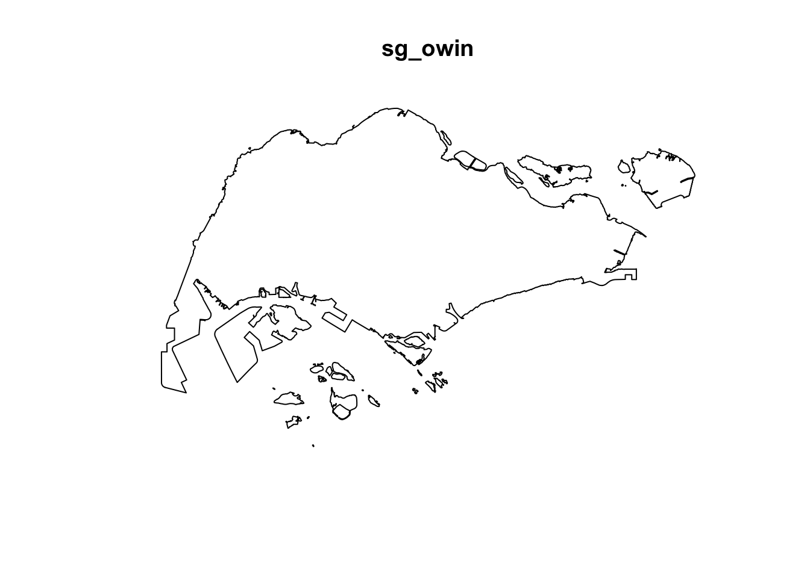
summary(sg_owin)Window: polygonal boundary
50 separate polygons (1 hole)
vertices area relative.area
polygon 1 (hole) 30 -7081.18 -9.76e-06
polygon 2 55 82537.90 1.14e-04
polygon 3 90 415092.00 5.72e-04
polygon 4 49 16698.60 2.30e-05
polygon 5 38 24249.20 3.34e-05
polygon 6 976 23344700.00 3.22e-02
polygon 7 721 1927950.00 2.66e-03
polygon 8 1992 9992170.00 1.38e-02
polygon 9 330 1118960.00 1.54e-03
polygon 10 175 925904.00 1.28e-03
polygon 11 115 928394.00 1.28e-03
polygon 12 24 6352.39 8.76e-06
polygon 13 190 202489.00 2.79e-04
polygon 14 37 10170.50 1.40e-05
polygon 15 25 16622.70 2.29e-05
polygon 16 10 2145.07 2.96e-06
polygon 17 66 16184.10 2.23e-05
polygon 18 5195 636837000.00 8.78e-01
polygon 19 76 312332.00 4.31e-04
polygon 20 627 31891300.00 4.40e-02
polygon 21 20 32842.00 4.53e-05
polygon 22 42 55831.70 7.70e-05
polygon 23 67 1313540.00 1.81e-03
polygon 24 734 4690930.00 6.47e-03
polygon 25 16 3194.60 4.40e-06
polygon 26 15 4872.96 6.72e-06
polygon 27 15 4464.20 6.15e-06
polygon 28 14 5466.74 7.54e-06
polygon 29 37 5261.94 7.25e-06
polygon 30 111 662927.00 9.14e-04
polygon 31 69 56313.40 7.76e-05
polygon 32 143 145139.00 2.00e-04
polygon 33 397 2488210.00 3.43e-03
polygon 34 90 115991.00 1.60e-04
polygon 35 98 62682.90 8.64e-05
polygon 36 165 338736.00 4.67e-04
polygon 37 130 94046.50 1.30e-04
polygon 38 93 430642.00 5.94e-04
polygon 39 16 2010.46 2.77e-06
polygon 40 415 3253840.00 4.49e-03
polygon 41 30 10838.20 1.49e-05
polygon 42 53 34400.30 4.74e-05
polygon 43 26 8347.58 1.15e-05
polygon 44 74 58223.40 8.03e-05
polygon 45 327 2169210.00 2.99e-03
polygon 46 177 467446.00 6.44e-04
polygon 47 46 699702.00 9.65e-04
polygon 48 6 16841.00 2.32e-05
polygon 49 13 70087.30 9.66e-05
polygon 50 4 9459.63 1.30e-05
enclosing rectangle: [2663.93, 56047.79] x [16357.98, 50244.03] units
(53380 x 33890 units)
Window area = 725376000 square units
Fraction of frame area: 0.401H3.5.6 Combining point events and owin objects
Finally, we can extract our childcare centre “events” and combine them with the owin object as such:
childcare_SG_ppp = childcare_ppp[sg_owin]
plot(childcare_SG_ppp)Warning in default.charmap(ntypes, chars): Too many types to display every type
as a different characterWarning: Only 10 out of 1545 symbols are shown in the symbol map
summary(childcare_SG_ppp)Marked planar point pattern: 1545 points
Average intensity 2.129929e-06 points per square unit
Coordinates are given to 11 decimal places
marks are of type 'character'
Summary:
Length Class Mode
1545 character character
Window: polygonal boundary
50 separate polygons (1 hole)
vertices area relative.area
polygon 1 (hole) 30 -7081.18 -9.76e-06
polygon 2 55 82537.90 1.14e-04
polygon 3 90 415092.00 5.72e-04
polygon 4 49 16698.60 2.30e-05
polygon 5 38 24249.20 3.34e-05
polygon 6 976 23344700.00 3.22e-02
polygon 7 721 1927950.00 2.66e-03
polygon 8 1992 9992170.00 1.38e-02
polygon 9 330 1118960.00 1.54e-03
polygon 10 175 925904.00 1.28e-03
polygon 11 115 928394.00 1.28e-03
polygon 12 24 6352.39 8.76e-06
polygon 13 190 202489.00 2.79e-04
polygon 14 37 10170.50 1.40e-05
polygon 15 25 16622.70 2.29e-05
polygon 16 10 2145.07 2.96e-06
polygon 17 66 16184.10 2.23e-05
polygon 18 5195 636837000.00 8.78e-01
polygon 19 76 312332.00 4.31e-04
polygon 20 627 31891300.00 4.40e-02
polygon 21 20 32842.00 4.53e-05
polygon 22 42 55831.70 7.70e-05
polygon 23 67 1313540.00 1.81e-03
polygon 24 734 4690930.00 6.47e-03
polygon 25 16 3194.60 4.40e-06
polygon 26 15 4872.96 6.72e-06
polygon 27 15 4464.20 6.15e-06
polygon 28 14 5466.74 7.54e-06
polygon 29 37 5261.94 7.25e-06
polygon 30 111 662927.00 9.14e-04
polygon 31 69 56313.40 7.76e-05
polygon 32 143 145139.00 2.00e-04
polygon 33 397 2488210.00 3.43e-03
polygon 34 90 115991.00 1.60e-04
polygon 35 98 62682.90 8.64e-05
polygon 36 165 338736.00 4.67e-04
polygon 37 130 94046.50 1.30e-04
polygon 38 93 430642.00 5.94e-04
polygon 39 16 2010.46 2.77e-06
polygon 40 415 3253840.00 4.49e-03
polygon 41 30 10838.20 1.49e-05
polygon 42 53 34400.30 4.74e-05
polygon 43 26 8347.58 1.15e-05
polygon 44 74 58223.40 8.03e-05
polygon 45 327 2169210.00 2.99e-03
polygon 46 177 467446.00 6.44e-04
polygon 47 46 699702.00 9.65e-04
polygon 48 6 16841.00 2.32e-05
polygon 49 13 70087.30 9.66e-05
polygon 50 4 9459.63 1.30e-05
enclosing rectangle: [2663.93, 56047.79] x [16357.98, 50244.03] units
(53380 x 33890 units)
Window area = 725376000 square units
Fraction of frame area: 0.401H3.6 First Order Spatial Point Patterns Analysis
Spatial point patterns analysis (SPPA) is the study of the spatial arrangements of points in (typically) 2D space. In this section, we will perform first order SPPA using spatstat. In particular, we will:
- derive the kernel density estimation (KDE) layer for visualising and exploring the intensity of point processes, and;
- performing confirmatory spatial point patterns analysis using nearest neighbour statistics.
H3.6.1 Kernel Density Estimation
Kernel density estimation (KDE) serves to compute the intensity of a point distribution. It has two general steps: first to compute the point intensity, followed by spatial interpolation using a kernel function (to create distributions like a uniform, triangular, quartic or gaussian distribution). In this exercise, we will mostly use the gaussian kernel.
H3.6.1.1 Computing KDE using automatic bandwidth selection
kde_childcareSG_bw <- density(childcare_SG_ppp,
sigma=bw.diggle,
edge=TRUE,
kernel="gaussian")
plot(kde_childcareSG_bw)As we can see, the range of our density values is between 0 and 35*10-4, which is way too small for us. This is because svy21 uses metres by default, which means the density values to be computed will be the number of points per square metre.
We will therefore need to rescale our KDE values. Before we move on though, it is good to know that the following code chunk will retrieve us the bandwidth used to compute the KDE layer.
bw <- bw.diggle(childcare_SG_ppp)
bw sigma
298.4095 H3.6.1.2 Rescaling KDE values
To rescale our KDE values, we can convert the unit of measurement into kilometres, and then re-run density() and plot the output map to see the result.
childcareSG_ppp.km <- rescale.ppp(childcare_SG_ppp, 1000, "km")
kde_childcareSG.bw <- density(childcareSG_ppp.km, sigma=bw.diggle, edge=TRUE, kernel="gaussian")
plot(kde_childcareSG.bw)We now have a much more readable density map.
H3.6.2 Working with different automatic bandwidth methods
Other than bw.diggle(), bw.CvL(), bw.scott() and bw.ppl may be used to determine the bandwidth.
bw.diggle(childcareSG_ppp.km) sigma
0.2984095 bw.scott(childcareSG_ppp.km) sigma.x sigma.y
2.224898 1.450966 bw.CvL(childcareSG_ppp.km) sigma
4.543278 bw.ppl(childcareSG_ppp.km) sigma
0.3897114 We can also plot different maps to compare the output of different bandwidth methods.
kde_childcareSG.ppl <- density(childcareSG_ppp.km,
sigma=bw.ppl,
edge=TRUE,
kernel="gaussian")
par(mfrow=c(1,2))
plot(kde_childcareSG.bw, main = "bw.diggle")
plot(kde_childcareSG.ppl, main = "bw.ppl")H3.6.3 Working with different kernel methods
As mentioned, there are different kernel methods to give us different distributions. The code chunk below compares the results of three other kernel methods than gaussian, and computes additional kernel density estimations.
par(mfrow=c(2,2))
plot(density(childcareSG_ppp.km,
sigma=bw.ppl,
edge=TRUE,
kernel="gaussian"),
main="Gaussian")
plot(density(childcareSG_ppp.km,
sigma=bw.ppl,
edge=TRUE,
kernel="epanechnikov"),
main="Epanechnikov")Warning in density.ppp(childcareSG_ppp.km, sigma = bw.ppl, edge = TRUE, :
Bandwidth selection will be based on Gaussian kernelplot(density(childcareSG_ppp.km,
sigma=bw.ppl,
edge=TRUE,
kernel="quartic"),
main="Quartic")Warning in density.ppp(childcareSG_ppp.km, sigma = bw.ppl, edge = TRUE, :
Bandwidth selection will be based on Gaussian kernelplot(density(childcareSG_ppp.km,
sigma=bw.ppl,
edge=TRUE,
kernel="disc"),
main="Disc")Warning in density.ppp(childcareSG_ppp.km, sigma = bw.ppl, edge = TRUE, :
Bandwidth selection will be based on Gaussian kernel
H3.7 Fixed and adaptive KDE
H3.7.1 Computing KDE using fixed bandwidth
Another way to compute a KDE layer is by defining a fixed bandwidth. The code chunk below defines a bandwidth (sigma) of 600m (0.6km).
kde_childcareSG_600 <- density(childcareSG_ppp.km, sigma=0.6, edge=TRUE, kernel="gaussian")
plot(kde_childcareSG_600)
H3.7.2 Computing KDE using adaptive bandwidth
The fixed bandwidth method is sensitive to skewed distributions of spatial point patterns (for instance, if a large number of points is clustered in one area, say an urban area, instead of another, like a rural area.) Adaptive bandwidth, using density.adaptive(), is one way to overcome this problem.
kde_childcareSG_adaptive <- adaptive.density(childcareSG_ppp.km, method="kernel")
plot(kde_childcareSG_adaptive)Two KDE outputs may be compared as follows.
par(mfrow=c(1,2))
plot(kde_childcareSG.bw, main = "Fixed bandwidth")
plot(kde_childcareSG_adaptive, main = "Adaptive bandwidth")H3.7.3 Converting KDE outputs into grid objects
For mapping purposes.
gridded_kde_childcareSG_bw <- as(kde_childcareSG.bw, "SpatialGridDataFrame")
spplot(gridded_kde_childcareSG_bw)
H3.7.3.1 Converting gridded output into RasterLayer
kde_childcareSG_bw_raster <- raster(kde_childcareSG.bw)
kde_childcareSG_bw_rasterclass : RasterLayer
dimensions : 128, 128, 16384 (nrow, ncol, ncell)
resolution : 0.4170614, 0.2647348 (x, y)
extent : 2.663926, 56.04779, 16.35798, 50.24403 (xmin, xmax, ymin, ymax)
crs : NA
source : memory
names : layer
values : -8.476185e-15, 28.51831 (min, max)H3.7.3.2 Assigning projection system
Notice that the crs attribute is NA, indicating that no coordinate system has been assigned to the raster. We will fix this by adding the WSY21 (Singapore) CRS to our RasterLayer.
projection(kde_childcareSG_bw_raster) <- CRS("+init=EPSG:3414")
kde_childcareSG_bw_rasterclass : RasterLayer
dimensions : 128, 128, 16384 (nrow, ncol, ncell)
resolution : 0.4170614, 0.2647348 (x, y)
extent : 2.663926, 56.04779, 16.35798, 50.24403 (xmin, xmax, ymin, ymax)
crs : +proj=tmerc +lat_0=1.36666666666667 +lon_0=103.833333333333 +k=1 +x_0=28001.642 +y_0=38744.572 +ellps=WGS84 +units=m +no_defs
source : memory
names : layer
values : -8.476185e-15, 28.51831 (min, max)H3.7.4 Visualising output in tmap
Finally, we can display the raster in cartographic quality using tmap.
tm_shape(kde_childcareSG_bw_raster) +
tm_raster("layer", palette = "viridis") +
tm_layout(legend.position = c("right", "bottom"), frame = FALSE)With all the work we have done so far, a quick glance at the maps indicates a higher than usual density of childcare centres in the areas of Woodlands South and Punggol (the yellow patches in the above tmap display).
H3.7.5 Comparing Spatial Point Patterns using KDE
And now for the fun part - comparing KDEs between regions. In this section, we will compare the density estimations of childcare centres located in the planning areas of Choa Chu Kang, Jurong West, Punggol and Tampines.
H3.7.5.1 Extracting and plotting study areas
# First, extract the target planning areas
punggol <- mpsz_sf %>%
filter(PLN_AREA_N == "PUNGGOL")
tampines <- mpsz_sf %>%
filter(PLN_AREA_N == "TAMPINES")
choa_chu_kang <- mpsz_sf %>%
filter(PLN_AREA_N == "CHOA CHU KANG")
jurong_west <- mpsz_sf %>%
filter(PLN_AREA_N == "JURONG WEST")
# Then, visualise the areas with a plot
par(mfrow=c(2,2))
plot(punggol, main = "Punggol")Warning: plotting the first 9 out of 15 attributes; use max.plot = 15 to plot
all
plot(tampines, main = "Tampines")Warning: plotting the first 9 out of 15 attributes; use max.plot = 15 to plot
all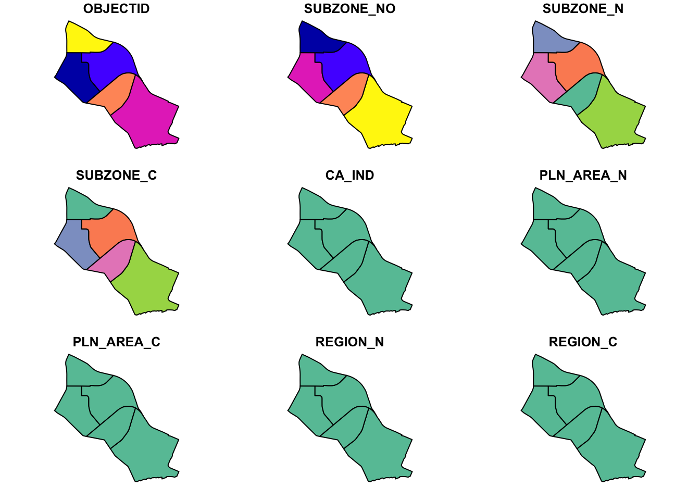
plot(choa_chu_kang, main = "Choa Chu Kang")Warning: plotting the first 10 out of 15 attributes; use max.plot = 15 to plot
all
plot(jurong_west, main = "Jurong West")Warning: plotting the first 9 out of 15 attributes; use max.plot = 15 to plot
all
H3.7.5.2 Creating owin object
pg_owin <- as.owin(punggol)
tm_owin <- as.owin(tampines)
ck_owin <- as.owin(choa_chu_kang)
jw_owin <- as.owin(jurong_west)H3.7.5.3 Combining childcare points and the study area
The code chunk below completes the following 3 tasks. First, we extract the childcare region for each of our four study areas. Next, we transform the unit of measurement from metres to kilometres. Finally, we can plot the locations of childcare centres within the four study areas.
childcare_pg_ppp <- childcare_ppp_jit[pg_owin]
childcare_tm_ppp <- childcare_ppp_jit[tm_owin]
childcare_ck_ppp <- childcare_ppp_jit[ck_owin]
childcare_jw_ppp <- childcare_ppp_jit[jw_owin]
childcare_pg_ppp.km <- rescale.ppp(childcare_pg_ppp, 1000, "km")
childcare_tm_ppp.km <- rescale.ppp(childcare_tm_ppp, 1000, "km")
childcare_ck_ppp.km <- rescale.ppp(childcare_ck_ppp, 1000, "km")
childcare_jw_ppp.km <- rescale.ppp(childcare_jw_ppp, 1000, "km")
par(mfrow=c(2,2))
plot(childcare_pg_ppp.km, main="Childcare centres in Punggol")Warning in default.charmap(ntypes, chars): Too many types to display every type
as a different characterWarning: Only 10 out of 61 symbols are shown in the symbol mapplot(childcare_tm_ppp.km, main="Childcare centres in Tampines")Warning in default.charmap(ntypes, chars): Too many types to display every type
as a different characterWarning: Only 10 out of 89 symbols are shown in the symbol mapplot(childcare_ck_ppp.km, main="Childcare centres in Choa Chu Kang")Warning in default.charmap(ntypes, chars): Too many types to display every type
as a different characterWarning: Only 10 out of 61 symbols are shown in the symbol mapplot(childcare_jw_ppp.km, main="Childcare centres in Jurong West")Warning in default.charmap(ntypes, chars): Too many types to display every type
as a different characterWarning: Only 10 out of 88 symbols are shown in the symbol mapH3.7.5.4 Computing KDE
Finally, we can compute the KDE for each of the four planning areas with the bw.diggle method.
par(mfrow=c(2,2))
plot(density(childcare_pg_ppp.km,
sigma=bw.diggle,
edge=TRUE,
kernel="gaussian"),
main="Punggol")
plot(density(childcare_tm_ppp.km,
sigma=bw.diggle,
edge=TRUE,
kernel="gaussian"),
main="Tempines")
plot(density(childcare_ck_ppp.km,
sigma=bw.diggle,
edge=TRUE,
kernel="gaussian"),
main="Choa Chu Kang")
plot(density(childcare_jw_ppp.km,
sigma=bw.diggle,
edge=TRUE,
kernel="gaussian"),
main="Jurong West")The KDE displays indicate Jurong West as the planning area with the lowest concentration of childcare centres and Punggol as the planning area with the highest. Choa Chu Kang comes in second, followed by Tampines.
H3.8 Nearest Neighbour Analysis
Nearest neighbours are the direct distance from points to their nearest neighbours. The nearest neighbour index is expressed as the ratio of the observed mean distance to the expected mean distance. An index of less than 1 indicates the spatial point pattern exhibits clustering, while an index of greater than 1 indicates dispersion or competition. Finally, an index of exactly 1 indicates complete random distribution.
In this section, we will perform the Clark-Evans test on the hypothesis that the distribution of childcare services is random.
H3.8.1 Testing spatial point patterns using the Clark-Evans Test
clarkevans.test(childcare_SG_ppp,
correction="none",
clipregion="sg_owin",
alternative=c("clustered"),
nsim=95)
Clark-Evans test
No edge correction
Z-test
data: childcare_SG_ppp
R = 0.55631, p-value < 2.2e-16
alternative hypothesis: clustered (R < 1)With a p-value of 2.2 * 10-16, we can conclude that the spatial point patterns are not randomly distributed for the entire country, and are instead clustered. We can corroborate this test result with the map visualisations, that indicates that childcare centres are typically located in either the city centre or suburban towns.
We can run the test again on each of the sets pertaining to our four planning areas. For now, we will focus on Punggol and Jurong West - the former is a non-mature estate inhabited by more young families, while the latter is a mature estate where residents might have lived in for longer.
H3.8.2 Clark-Evans Test: Punggol
clarkevans.test(childcare_pg_ppp,
correction="none",
clipregion=NULL,
alternative=c("two.sided"),
nsim=95)
Clark-Evans test
No edge correction
Z-test
data: childcare_pg_ppp
R = 0.88007, p-value = 0.07314
alternative hypothesis: two-sidedOnce again, we use a 95% confidence interval. Since the p-value is lower than 0.05, we can reject the null hypothesis that the point patterns are randomly distributed - i.e., conclude that the point patterns are not randomly distributed.
H3.8.3 Clark-Evans Test: Jurong West
clarkevans.test(childcare_jw_ppp,
correction="none",
clipregion=NULL,
alternative=c("two.sided"),
nsim=95)
Clark-Evans test
No edge correction
Z-test
data: childcare_jw_ppp
R = 0.8889, p-value = 0.04617
alternative hypothesis: two-sidedOnce again, our p-value is lower than 0.05, leading us to conclude that the point patterns are not randomly distributed.
H3.9 Second Order Spatial Points Patterns Analysis
While first order SPPA measures how observations vary due to changes in the underlying property, second order SPPA deals with variations in observations due to the way they interact with one another. The methods used for second order SPPA include the F-, G-, K- and L-functions.
In this section, we will explore the F-, G- K- and L-functions by applying them on the childcare centre data for the planning areas of Choa Chu Kang in Western Singapore, and Tampines in the East.
H3.10 F-Function
The F-function estimates the empty space function \(F(r)\) from a point pattern in a window of arbitrary shape. It can be computed using Fest() of the spatstat package.
Following that, a Monte Carlo simulation test can be performed using envelope(). We will perform both operations on the segments of the data representing
H3.10.1 Computing F-function estimations
H3.10.1.1 Choa Chu Kang
F_function_Choa_Chu_Kang <- Fest(childcare_ck_ppp)
plot(F_function_Choa_Chu_Kang)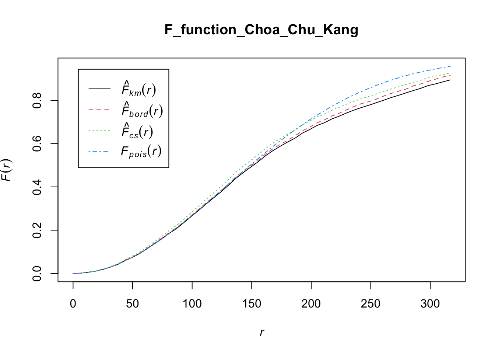
H3.10.1.2 Tampines
F_function_Tampines <- Fest(childcare_tm_ppp, correction="best")
plot(F_function_Tampines)H3.10.2 Performing Complete Spatial Randomness Test
To confirm the observed spatial patterns above, we can conduct a Monte Carlo (hypothesis) test with envelope(). The hypothesis and test are as follows:
H0 = The distribution of childcare services at Choa Chu Kang/Tampines are randomly distributed.
H1= The distribution of childcare services at Choa Chu Kang/Tampines are not randomly distributed.
The null hypothesis will be rejected if p-value is smaller than alpha value of 0.001.
H3.10.2.1 Choa Chu Kang
F_CCK.csr <- envelope(childcare_ck_ppp, Fest, nsim = 999)Generating 999 simulations of CSR ...
1, 2, 3, ......10.........20.........30.........40.........50.........60..
.......70.........80.........90.........100.........110.........120.........130
.........140.........150.........160.........170.........180.........190........
.200.........210.........220.........230.........240.........250.........260......
...270.........280.........290.........300.........310.........320.........330....
.....340.........350.........360.........370.........380.........390.........400..
.......410.........420.........430.........440.........450.........460.........470
.........480.........490.........500.........510.........520.........530........
.540.........550.........560.........570.........580.........590.........600......
...610.........620.........630.........640.........650.........660.........670....
.....680.........690.........700.........710.........720.........730.........740..
.......750.........760.........770.........780.........790.........800.........810
.........820.........830.........840.........850.........860.........870........
.880.........890.........900.........910.........920.........930.........940......
...950.........960.........970.........980.........990........
999.
Done.plot(F_CCK.csr)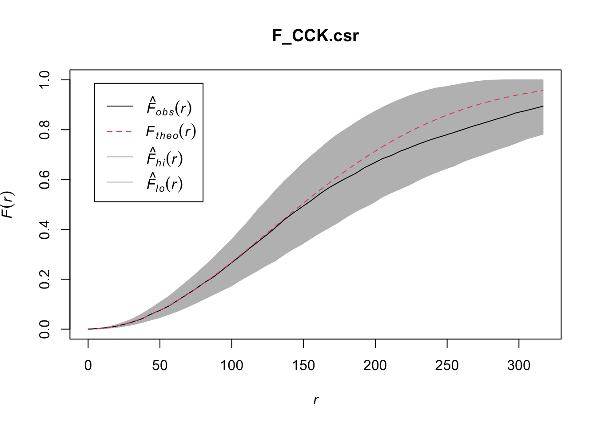
H3.10.2.2 Tampines
F_TM.csr <- envelope(childcare_tm_ppp, Fest, correction="all", nsim = 999)Generating 999 simulations of CSR ...
1, 2, 3, ......10.........20.........30.........40.........50.........60..
.......70.........80.........90.........100.........110.........120.........130
.........140.........150.........160.........170.........180.........190........
.200.........210.........220.........230.........240.........250.........260......
...270.........280.........290.........300.........310.........320.........330....
.....340.........350.........360.........370.........380.........390.........400..
.......410.........420.........430.........440.........450.........460.........470
.........480.........490.........500.........510.........520.........530........
.540.........550.........560.........570.........580.........590.........600......
...610.........620.........630.........640.........650.........660.........670....
.....680.........690.........700.........710.........720.........730.........740..
.......750.........760.........770.........780.........790.........800.........810
.........820.........830.........840.........850.........860.........870........
.880.........890.........900.........910.........920.........930.........940......
...950.........960.........970.........980.........990........
999.
Done.plot(F_TM.csr)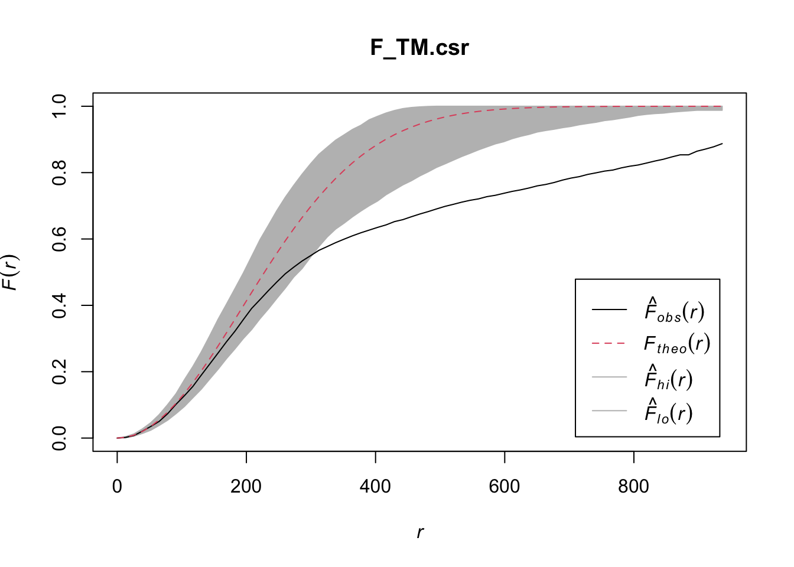
The F-function for the Choa Chu Kang set is within the envelope, and that for the Tampines set is below the envelope. This indicates that indicating that the childcare centres in Choa Chu Kang exhibit complete spatial randomness (CSR), while the centres in Tampines are clustered.
H3.11 G-Function
The G-function measures the distribution of distances from an arbitrary event to its nearest event.
Once again, a function from the spatstat package will be used, this time the Gest() function. Following that, we will perform another Monte Carlo simulation test with envelope().
H3.11.1 Computing G-function estimations
H3.11.1.1 Choa Chu Kang
G_CK <- Gest(childcare_ck_ppp, correction = "border")
plot(G_CK, xlim=c(0,500))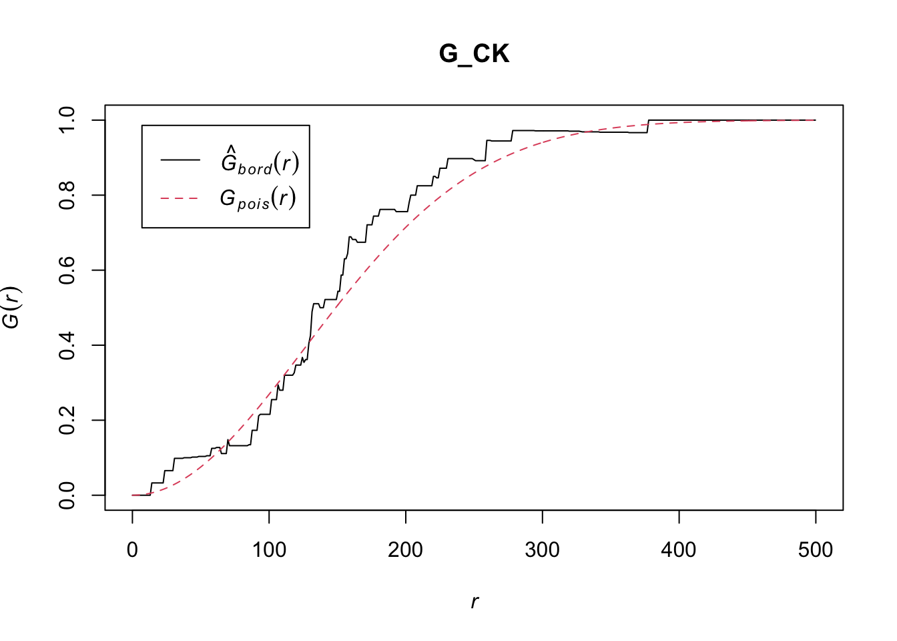
H3.11.1.2 Tampines
G_tm <- Gest(childcare_tm_ppp, correction = "best")
plot(G_tm)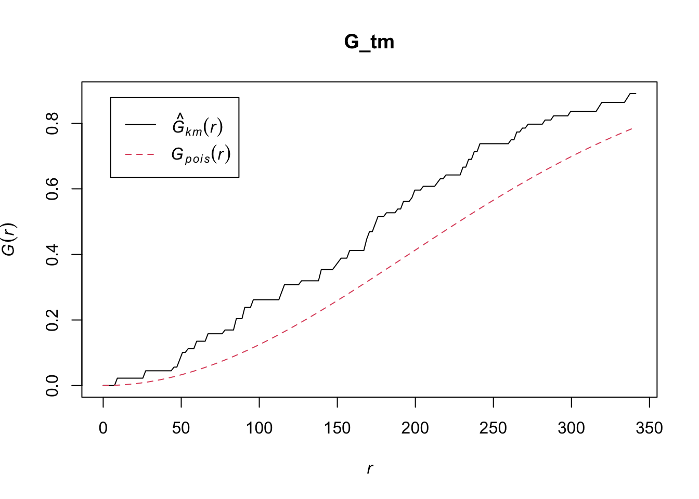
H3.11.2 Performing Complete Spatial Randomness Test
As a reminder:
H0 = The distribution of childcare services at Choa Chu Kang/Tampines are randomly distributed.
H1= The distribution of childcare services at Choa Chu Kang/Tampines are not randomly distributed.
The null hypothesis will be rejected if p-value is smaller than alpha value of 0.001.
H3.11.2.1 Choa Chu Kang
G_CK.csr <- envelope(childcare_ck_ppp, Gest, nsim = 999)Generating 999 simulations of CSR ...
1, 2, 3, ......10.........20.........30.........40.........50.........60..
.......70.........80.........90.........100.........110.........120.........130
.........140.........150.........160.........170.........180.........190........
.200.........210.........220.........230.........240.........250.........260......
...270.........280.........290.........300.........310.........320.........330....
.....340.........350.........360.........370.........380.........390.........400..
.......410.........420.........430.........440.........450.........460.........470
.........480.........490.........500.........510.........520.........530........
.540.........550.........560.........570.........580.........590.........600......
...610.........620.........630.........640.........650.........660.........670....
.....680.........690.........700.........710.........720.........730.........740..
.......750.........760.........770.........780.........790.........800.........810
.........820.........830.........840.........850.........860.........870........
.880.........890.........900.........910.........920.........930.........940......
...950.........960.........970.........980.........990........
999.
Done.plot(G_CK.csr)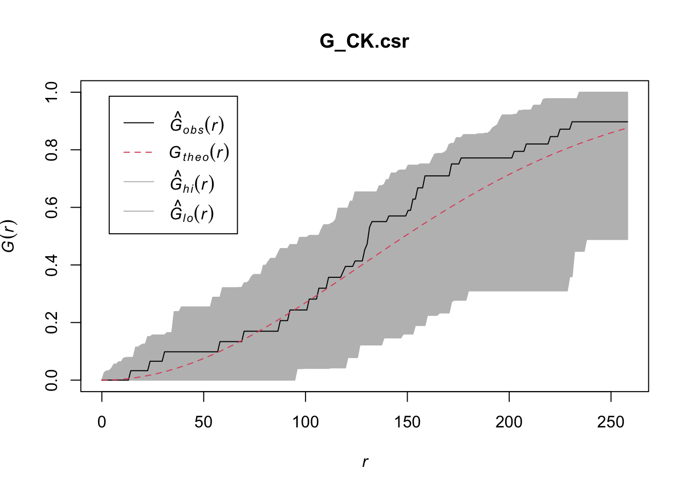
H3.11.2.2 Tampines
G_tm.csr <- envelope(childcare_tm_ppp, Gest, correction = "all", nsim = 999)Generating 999 simulations of CSR ...
1, 2, 3, ......10.........20.........30.........40.........50.........60..
.......70.........80.........90.........100.........110.........120.........130
.........140.........150.........160.........170.........180.........190........
.200.........210.........220.........230.........240.........250.........260......
...270.........280.........290.........300.........310.........320.........330....
.....340.........350.........360.........370.........380.........390.........400..
.......410.........420.........430.........440.........450.........460.........470
.........480.........490.........500.........510.........520.........530........
.540.........550.........560.........570.........580.........590.........600......
...610.........620.........630.........640.........650.........660.........670....
.....680.........690.........700.........710.........720.........730.........740..
.......750.........760.........770.........780.........790.........800.........810
.........820.........830.........840.........850.........860.........870........
.880.........890.........900.........910.........920.........930.........940......
...950.........960.........970.........980.........990........
999.
Done.plot(G_tm.csr)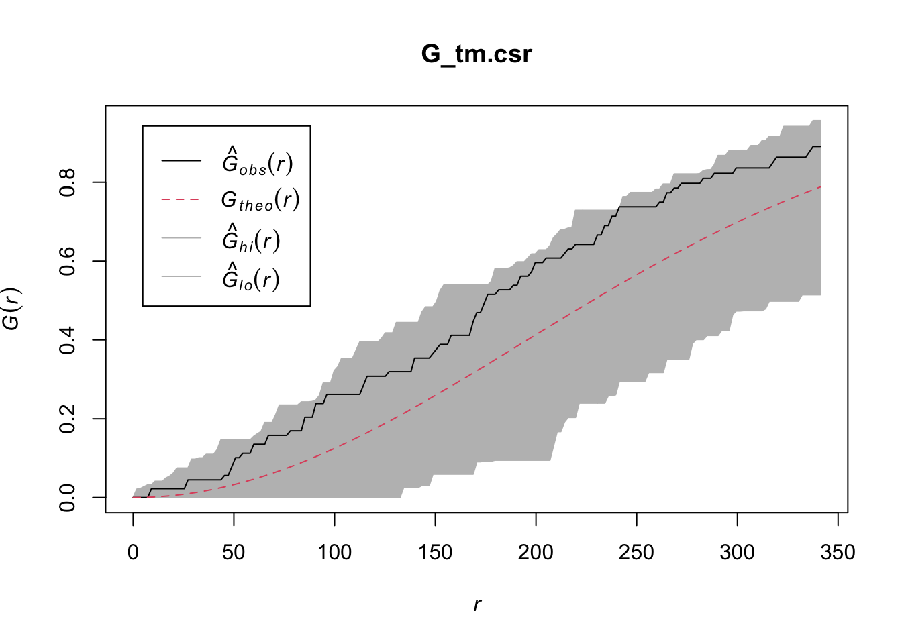
Unlike the function for Choa Chu Kang, which lies entirely within the envelopes, a small portion of the Tampines function falls above the envelopes. Once again, this indicates that the childcare centres of Choa Chu Kang exhibit CSR, while those in Tampines are clustered.
H3.12 K-Function
The K-function measures the number of events found up to a given distance of any particular event. For this exercise, the spatstat function to be used is the the Kest() function, and another Monte Carlo simulation test will be performed with envelope().
H3.12.1 Computing K-function estimations
H3.12.1.1 Choa Chu Kang
K_ck = Kest(childcare_ck_ppp, correction = "Ripley")
plot(K_ck, . -r ~ r, ylab= "K(d)-r", xlab = "d(m)")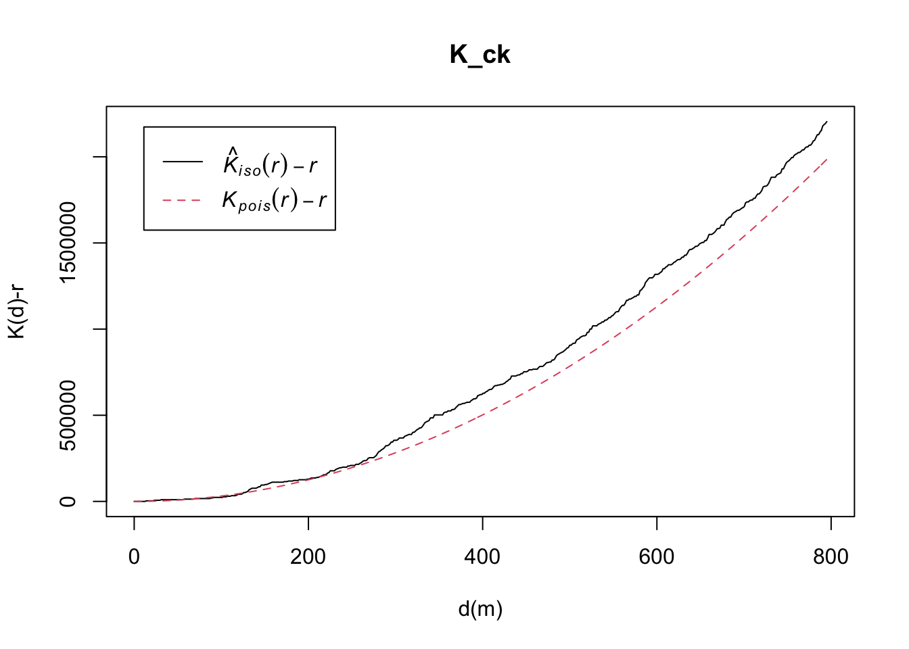
H3.12.1.2 Tampines
K_tm = Kest(childcare_tm_ppp, correction = "Ripley")
plot(K_tm, . -r ~ r,
ylab= "K(d)-r", xlab = "d(m)",
xlim=c(0,1000))H3.12.2 Performing Complete Spatial Randomness Test
As a reminder:
H0 = The distribution of childcare services at Choa Chu Kang/Tampines are randomly distributed.
H1= The distribution of childcare services at Choa Chu Kang/Tampines are not randomly distributed.
The null hypothesis will be rejected if p-value is smaller than alpha value of 0.001.
H3.12.2.1 Choa Chu Kang
K_ck.csr <- envelope(childcare_ck_ppp, Kest, nsim = 99, rank = 1, glocal=TRUE)Generating 99 simulations of CSR ...
1, 2, 3, 4, 5, 6, 7, 8, 9, 10, 11, 12, 13, 14, 15, 16, 17, 18, 19, 20,
21, 22, 23, 24, 25, 26, 27, 28, 29, 30, 31, 32, 33, 34, 35, 36, 37, 38, 39, 40,
41, 42, 43, 44, 45, 46, 47, 48, 49, 50, 51, 52, 53, 54, 55, 56, 57, 58, 59, 60,
61, 62, 63, 64, 65, 66, 67, 68, 69, 70, 71, 72, 73, 74, 75, 76, 77, 78, 79, 80,
81, 82, 83, 84, 85, 86, 87, 88, 89, 90, 91, 92, 93, 94, 95, 96, 97, 98,
99.
Done.plot(K_ck.csr, . - r ~ r, xlab="d", ylab="K(d)-r")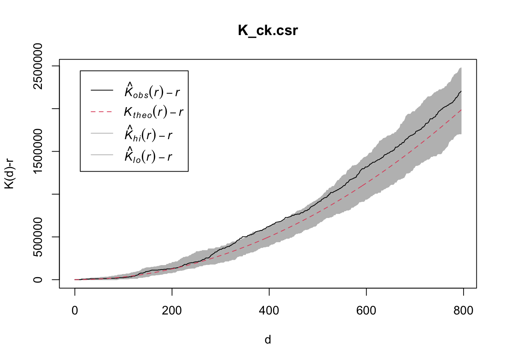
H3.12.2.2 Tampines
K_tm.csr <- envelope(childcare_tm_ppp, Kest, nsim = 99, rank = 1, glocal=TRUE)Generating 99 simulations of CSR ...
1, 2, 3, 4, 5, 6, 7, 8, 9, 10, 11, 12, 13, 14, 15, 16, 17, 18, 19, 20,
21, 22, 23, 24, 25, 26, 27, 28, 29, 30, 31, 32, 33, 34, 35, 36, 37, 38, 39, 40,
41, 42, 43, 44, 45, 46, 47, 48, 49, 50, 51, 52, 53, 54, 55, 56, 57, 58, 59, 60,
61, 62, 63, 64, 65, 66, 67, 68, 69, 70, 71, 72, 73, 74, 75, 76, 77, 78, 79, 80,
81, 82, 83, 84, 85, 86, 87, 88, 89, 90, 91, 92, 93, 94, 95, 96, 97, 98,
99.
Done.plot(K_tm.csr, . - r ~ r,
xlab="d", ylab="K(d)-r", xlim=c(0,500))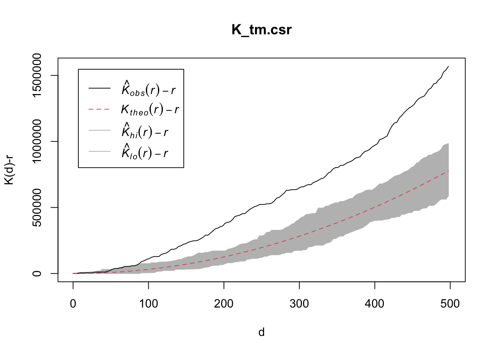
The Choa Chu Kang K-function lies entirely inside the envelope, while much of that for Tampines lies above it. Once again, this shows that the Choa Chu Kang childcare centres are randomly distributed (CSR). The K-function indicates that the childcare centres in Tampines exhibit a significant regular pattern.
H3.13 L-Function
The L-function is a normalisation of the K-function so as to obtain a benchmark of zero.
For this exercise, the spatstat function to be used is the the Lest() function, and another Monte Carlo simulation test will be performed with envelope().
H3.13.1 Computing L-function estimations
H3.13.1.1 Choa Chu Kang
L_ck = Lest(childcare_ck_ppp, correction = "Ripley")
plot(L_ck, . -r ~ r,
ylab= "L(d)-r", xlab = "d(m)")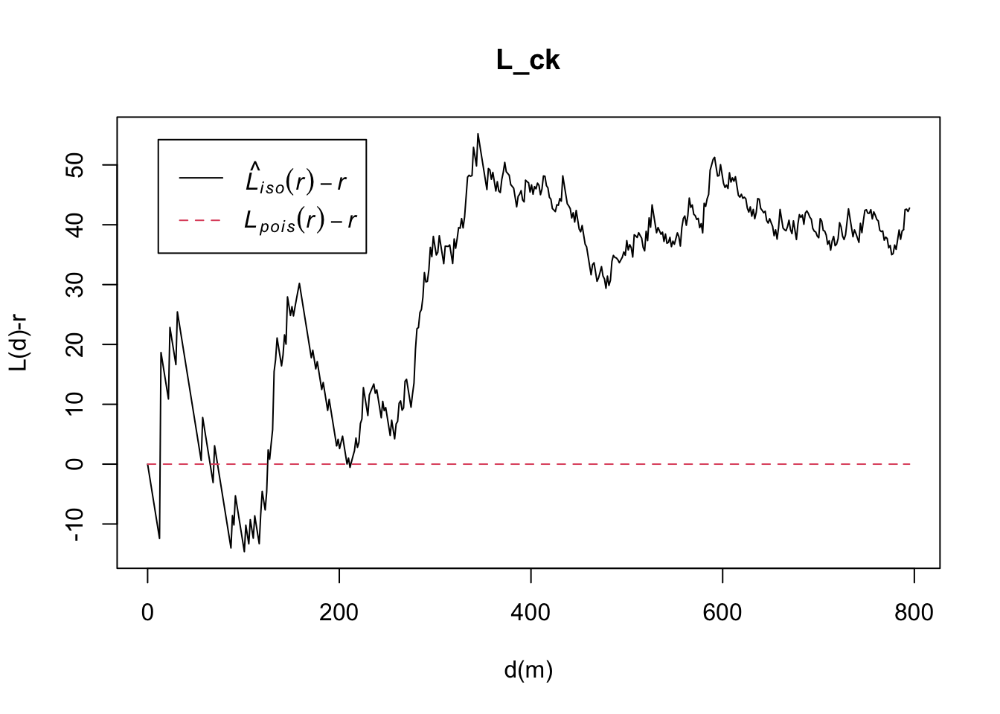
H3.13.1.2 Tampines
L_tm = Lest(childcare_tm_ppp, correction = "Ripley")
plot(L_tm, . -r ~ r,
ylab= "L(d)-r", xlab = "d(m)",
xlim=c(0,1000))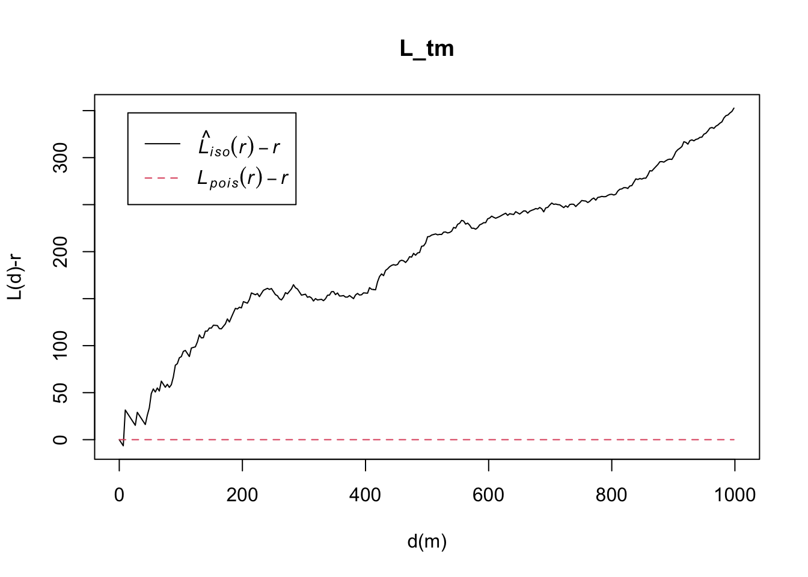
H3.13.2 Performing Complete Spatial Randomness Test
H3.13.2.1 Choa Chu Kang
L_ck.csr <- envelope(childcare_ck_ppp, Lest, nsim = 99, rank = 1, glocal=TRUE)Generating 99 simulations of CSR ...
1, 2, 3, 4, 5, 6, 7, 8, 9, 10, 11, 12, 13, 14, 15, 16, 17, 18, 19, 20,
21, 22, 23, 24, 25, 26, 27, 28, 29, 30, 31, 32, 33, 34, 35, 36, 37, 38, 39, 40,
41, 42, 43, 44, 45, 46, 47, 48, 49, 50, 51, 52, 53, 54, 55, 56, 57, 58, 59, 60,
61, 62, 63, 64, 65, 66, 67, 68, 69, 70, 71, 72, 73, 74, 75, 76, 77, 78, 79, 80,
81, 82, 83, 84, 85, 86, 87, 88, 89, 90, 91, 92, 93, 94, 95, 96, 97, 98,
99.
Done.plot(L_ck.csr, . - r ~ r, xlab="d", ylab="L(d)-r")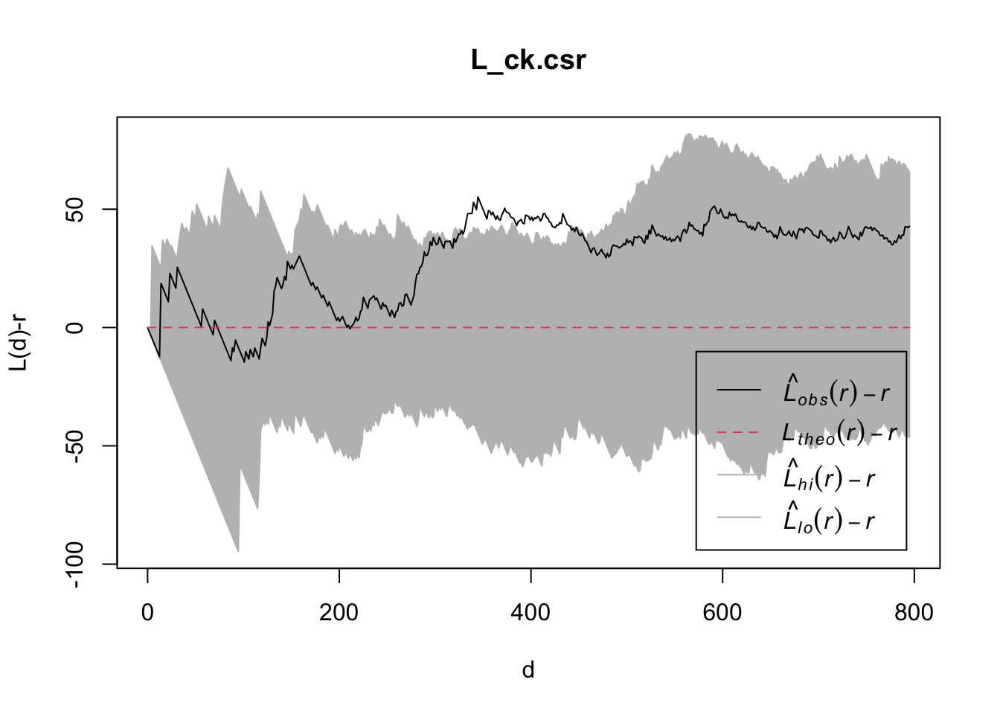
H3.13.2.2 Tampines
L_tm.csr <- envelope(childcare_tm_ppp, Lest, nsim = 99, rank = 1, glocal=TRUE)Generating 99 simulations of CSR ...
1, 2, 3, 4, 5, 6, 7, 8, 9, 10, 11, 12, 13, 14, 15, 16, 17, 18, 19, 20,
21, 22, 23, 24, 25, 26, 27, 28, 29, 30, 31, 32, 33, 34, 35, 36, 37, 38, 39, 40,
41, 42, 43, 44, 45, 46, 47, 48, 49, 50, 51, 52, 53, 54, 55, 56, 57, 58, 59, 60,
61, 62, 63, 64, 65, 66, 67, 68, 69, 70, 71, 72, 73, 74, 75, 76, 77, 78, 79, 80,
81, 82, 83, 84, 85, 86, 87, 88, 89, 90, 91, 92, 93, 94, 95, 96, 97, 98,
99.
Done.plot(L_tm.csr, . - r ~ r,
xlab="d", ylab="L(d)-r", xlim=c(0,500))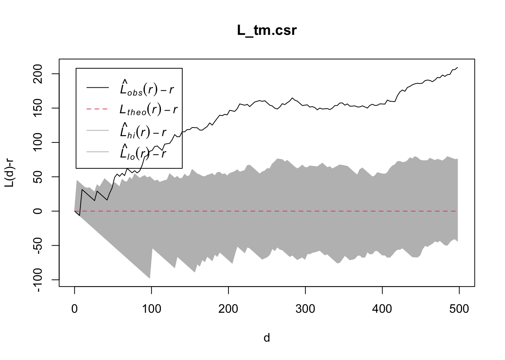